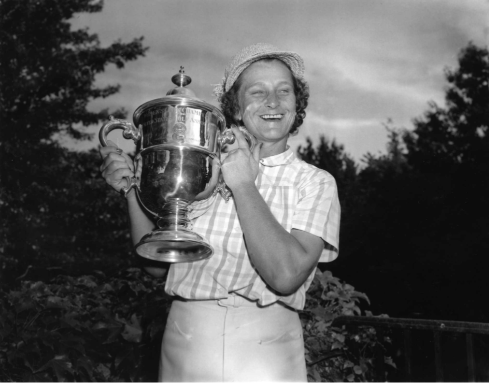
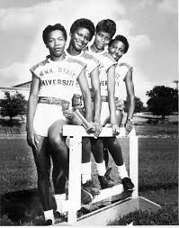

The Founding of the LPGA

TSU Tigerbelles
In 1950, the LPGA was formed, marking it as the oldest women’s sports organization in the world. They started off with a tour that year, which started with the Tampa Open in Florida in January, and ending with the Hardscrabble Women’s Invitational in October. It held 15 official tournaments with the top prize earner that year, Babe Didrikson Zaharias, winning $15,000 dollars (~200k today) and a total prize pool around $40,000 dollars. This is notably a humble start compared to the LPGA today which has over 30 official tournaments, $130 million dollars in prize money, and far less than the ~550 million dollars of the PGA tour 2025. There were 13 founding members of the LPGA, all of whom have been nominated for the golf hall of fame. The creation of the league was notably marked by a lack of interest by many in the public including sponsors who politely ignored the league. This created financial issues similar to the WPGA which started in 1944, and ended in 1948 due to a lack of sponsors. Many didn’t care to follow the league. Female leagues for golf were able to thrive far earlier than most other sports due to the nature of the sport being often more gentile for clubs. Even still, the founder Marilynn Smith said, "We were supposed to be married and have children. It wasn't normal to have a woman on the golf course”, along with “Powerful women always make certain people uneasy”, explaining that the societal expectations for women was to remain in the background of society, and not as athletes. By founding the LPGA, these athletes showed their independence as professionals.
Mae Faggs, Isabelle Daniels, Wilma Rudolph and Lucinda Williams: 4 Female African American Athletes who represented TSU in 1956 for relay. Their equipment is notably less geared towards a feminine image, and more towards practicality and a competitive edge. In the 1950s, Ed Temple was appointed as the head coach of the all black women’s track team at Tennessee State University and given a very small budget of $64. Black women at the time faced prejudice due to both Jim Crow laws. Additionally, the popular “scientific” opinion was that running was dangerous for women as it would cause health issues, along with the idea that athletic women couldn’t be feminine. In order to compensate for the enormous financial constraints, Coach Ed Temple made his track program extremely rigorous, with his athletes waking up at 5AM each day, often through extreme heat. Famously, the tigerbelles had to run on dirt and cinder tracks which were extremely rough due to being coarse, which would cause worse grip (and hence, slower times), and also make falling more dangerous causing cinder tattoos. To make matters worse, the track was originally located near a pigpen causing terrible odors. Coach Temple insisted his athletes be respected and allowed to wear the competitive attire. He also maintained that all his athletes maintain strong academic standings, with all but one of his Olympians graduating the university, showing that women could be elite athletes without needing to sacrifice their dignity off the field. The 1950s marked their start of international fame with 2 members of the Tigerbelles, Mae Faggs and Barbara Jones, winning the gold medal of the Helsinki 1952 Olympics 4x100 relay race. This increased fame allowed for TSU to issue more athletic scholarships, which was incredibly rare in the 50s. It also brought better funding that began to close the gender pay gap, due to their incredible performance.